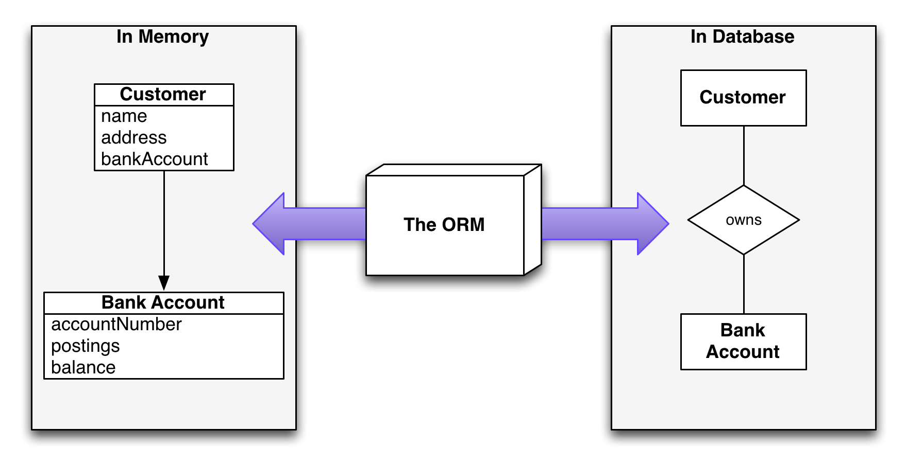
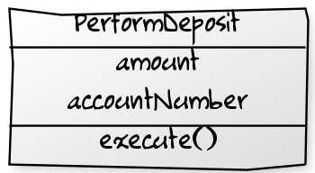
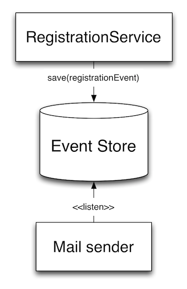

Event Sourcing
in practice
Who we are
Benjamin Reitzammer
CTO at Vaamo Finanz AG
Johannes Seitz
Freelance Software Engineer
Who are you?
Before we get started...
- I have heard about Event Sourcing before
- I have been to one of the Event Sourcing/CQRS talks
- We do CQRS and/or Event Sourcing at work
- We do Domain-Driven Design
This talk ...
... is for you, if you want to ...
- ... understand the basic idea of ES
- ... know about the advantages of ES
- ... learn about the issues that come with ES
- ... understand when ES is a suitable pattern
Event Sourcing vs Active Record
Event Sourcing vs Active Record
We all know Active Record:

Event Sourcing is different
- Don't save the current state of objects
- Save the events that lead to the current state
- Event: Something that happend in the past.
- E.G.

The advantages of Event Sourcing
The advantages of Event Sourcing
- Complete log of every state change ever
- Unmatched traceability and debugability
- Very good performance characteristics
- No more mapping objects to tables
Mapping objects to tables is suprisingly hard
- 143 pages on mapping objects to tables
- Recommends using ORM-Tools only for CRUD-heavy applications
- Why?
The Object-Relational mismatch

How does Event Sourcing work?
Saving objects
- Create an event for every state change of the object:

- Persist this stream of events, preserving event order
Restoring objects
Subsequently apply the events from the respective EventStream to a "blank" object instance
Restoring objects

Restoring objects

Restoring objects

Restoring objects

Updating objects
val account = accountRepository.get(123)
val modifiedAccount = account.withdraw(new Euro(10))
accountRepository.save(modifiedAccount)
What should be persisted?

Deleting objects
How do you delete an object?

Retroactive Event. An event undoing something that happened in the past
Making Event Sourcing work
Issues encountered in practice
- Event Sourcing & Command Sourcing confusion
- Side-effects on event replay
- Reporting and queries
- Evolving events
- Concurrent writes
Problem: Events vs Command
- Confusing Event Sourcing and Command Sourcing
Event Sourcing
- Persist only changes in state
- Replay can be side-effect free
Command Sourcing
- Persist Commands
- Replay may trigger side-effects

Ex: Command
case class ChangeOwner(accountID: UUID, newOwner:String)
extends Command
class BankAccountCommandHandler(repo:BankAccountRepository) {
def handle(changeOwner:ChangeOwner) {
val accountId = changeOwner.accountID
val newOwner = changeOwner.newOwner
val account = repo.getAccount(accountId)
val modifiedAccount = account.changeOwner(newOwner)
repo.saveAccount(modifiedAccount)
}
}
Problem: Side-effects
- We don't want side-effects to be replayed
- E-Mails sent twice, orders placed etc.
Solutions
- Solution 1: Separate side-effect and state change
- Solution 2: Saving event triggers side-effect
Solution 1: Separate side-effect and state change
-
Execute command on object. This triggers side-effects produces events
Command -> Object -> Events
-
Applying Events causes state to change
Object -> Event -> Changed Object
Only the event (=state change) is being replayed.
Solution 2: Saving events triggers side-effects
When events are saved, side-effects are triggered by event-listeners

Problem: Reporting & Queries
The persisted event stream does not allow for database queries and reports
Problem: Evolving events
How to evolve (immutable) events?
Reasons for change
- Event no longer relevant (delete)
- Event fields change (edit)
- Event names change (rename)
Solution
- Rewrite events in Event Store
- Event update at runtime
- Snapshotting
Problem: Concurrent writes
How to resolve race conditions that occur due to concurrent writes?
Summary
- Don't confuse Event Sourcing & Command Sourcing
- Decide how to handle side-effects on event replay
- Reporting and queries
- Versioning of events
- Concurrent writes
Considering Event Sourcing
Pros and Cons of Event/Command Sourcing
Pros
- Bypass the O-R impedance mismatch
- Easy way to undo things
- Debugability and traceability
- After-the-fact data analysis of Event Streams
Cons
- Takes getting used to
- Much less framework/community/vendor support
- Awkward queries (solved by CQRS)
Debugging and accountability
- Every change to state is traceable
- You know how the system got into the current state
- Metadata like "who did that" and "when did it happen"
Mining of event streams
Should I be doing Event Sourcing?
Event Sourcing is probably a good fit when ...
- you're building rich object-oriented domain models (e.g. DDD)
- you have a lot of behaviour that isn't CRUD
- accountability/debugability is critical
- your business derives value or competitive advantage from event data
- you're building a scaleable system based on the CQRS pattern
Interesting Projects

Event Store
Akka Persistence

- Experimental extension for Akka
- Runs on JVM
- More Information available on akka.io
Thank you for your kind attention
Sources and further reading
Event Sourcing theory
Event sourcing implementation
Sources and further reading
Command-Query Responsibility Segregation (CQRS)
Example Projects
←
→
/
#